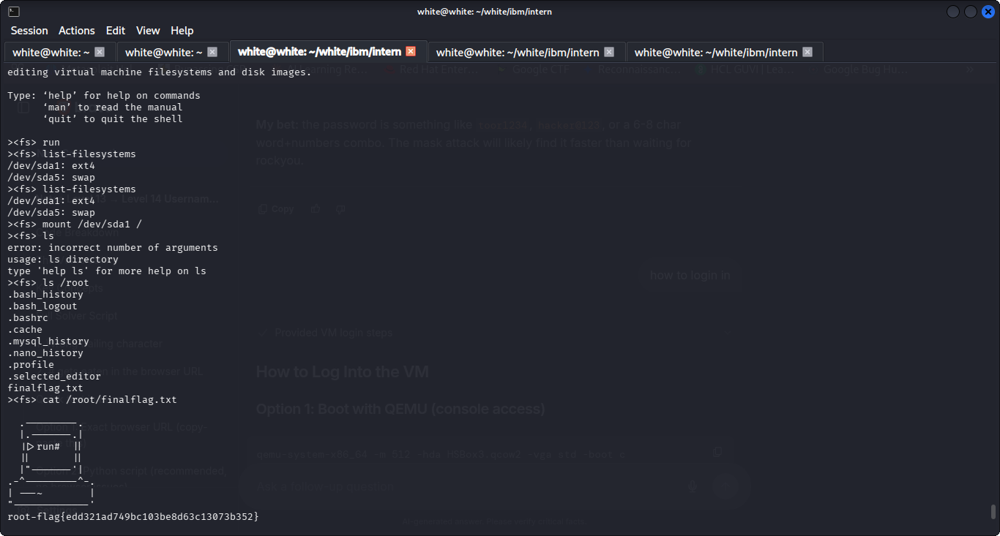

The objective is to perform offline forensics on HSBox3-disk001.vmdk without booting the operating system. By attaching the virtual disk image in read-only mode using guestfish, we protect volatile state, maintain hash integrity, and safely extract the root flag alongside forensic artifacts.
guestfish --ro. Read-only flags ensure no disk writes or metadata updates take place, preserving the evidence hash: SHA1 = 4e468f030a3264dc7f0b4e70eaba499731e5870d.
| Tool / Command | Execution Mode | Forensic Purpose |
|---|---|---|
guestfish --ro -a ... |
Read-Only Disk Shell | Mounts and provides interactive inspection of the virtual disk. |
list-filesystems |
Partition Discovery | Identifies ext4 root (/dev/sda1) and swap partitions. |
download ... |
Evidence Acquisition | Extracts sensitive artifacts (e.g. /etc/shadow) to host workstation. |
The disk image was initialized and mounted to the virtual root:

A deep-dive investigation into user history files and sensitive system configurations uncovered critical anti-forensics sanitization and database credentials:
.bash_history)zerofree: The utility zerofree zeroes out unallocated filesystem blocks on ext2/ext3/ext4 partitions..mysql_history)wp_users under database pumpkins, then destroyed the database schema with drop database pumpkins;.hackerschool.admin : adminadmin@localhost : adminpass20/etc/shadow)
The analyst inspected and extracted /etc/shadow to the host system using download:
$6$).wOlM44Zc | Stored Hash CZE.UYngQOICe6AJO9TPZB/oTbNz7KUbavUOutoCBt9Ss3e42v3elhgezv/4AgLw.../tmp/shadow for offline dictionary cracking without running processes on the target VM.| Action | Guestfish Command |
|---|---|
| Attach disk image in read-only mode | sudo guestfish --ro -a HSBox3-disk001.vmdk |
| Boot appliance virtualization backend | ><fs> run |
| Enumerate disk partitions & filesystems | ><fs> list-filesystems |
| Mount ext4 partition to root | ><fs> mount /dev/sda1 / |
| Inspect directory contents (Requires path) | ><fs> ls /root |
| Display file contents (Absolute path) | ><fs> cat /root/finalflag.txt |
| Extract evidence file to host workstation | ><fs> download /etc/shadow /tmp/shadow |
| Terminate guestfish session | ><fs> exit |
| Forensic Artifact | Discovered Value / Significance |
|---|---|
| Final Root Flag | root-flag{edd321ad749bc103be8d63c13073b352} |
| Active MySQL Database | hackerschool |
| Discovered MySQL Credentials | admin : adminpass20 (Active) | admin : admin (Legacy) |
| Anti-Forensics Utility | zerofree (used to zero-fill unallocated blocks) |
| Extracted Hash File | /tmp/shadow (Root SHA-512 crypt hash recovered) |
| Disk Image SHA-1 Hash | 4e468f030a3264dc7f0b4e70eaba499731e5870d |
guestfish, the analyst successfully preserved disk evidence, bypassed live system defenses, extracted the target CTF flag, and reconstructed post-exploitation activities without altering the underlying VMDK filesystem.